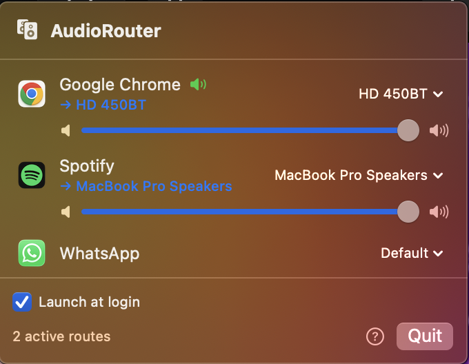
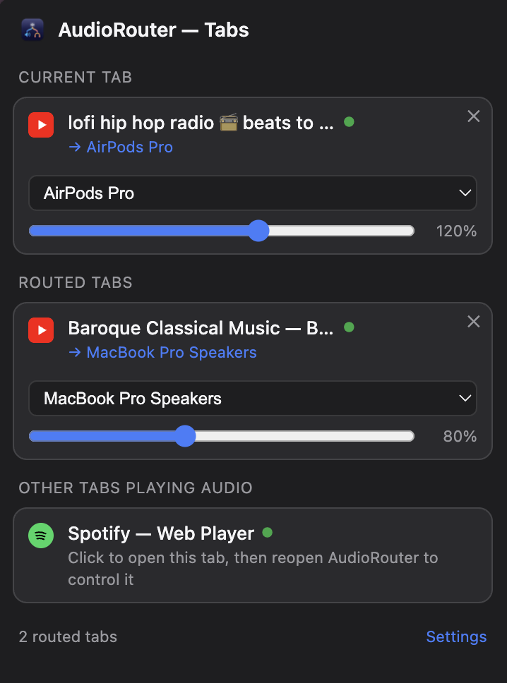
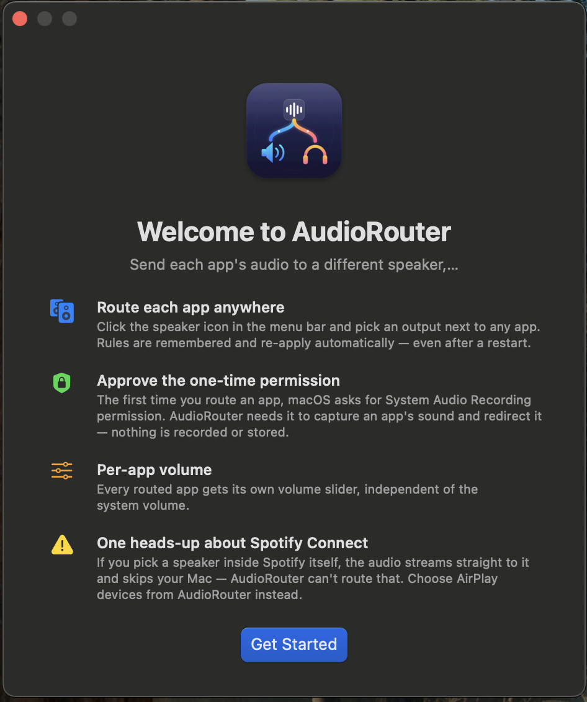
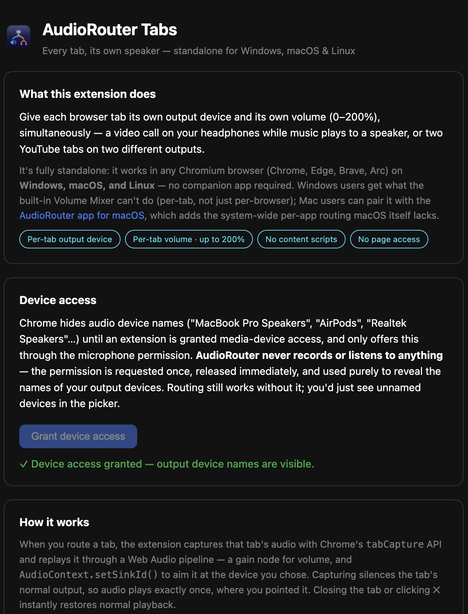

Every app. Every tab. Its own speaker.
Spotify on the living-room speaker. A lecture in your headphones. A second YouTube tab on the Mac speakers. Simultaneously — each with its own volume. AudioRouter does per-app routing on macOS and per-tab routing in any Chromium browser on Windows, macOS, and Linux.
A native Mac app. A browser extension.
Use either — or both.
AudioRouter for macOS The per-app audio control macOS never shipped

- Route any app to any output — AirPlay, Bluetooth, USB, built-in — simultaneously
- Per-app volume, independent of system volume
- Rules persist and re-apply automatically, across reboots
- Live playing indicators, graceful fallback when a device disconnects
- Native Swift menu bar app on Apple's Core Audio process-tap API — no drivers, no Electron
brew tap abhisekganguly/tap
brew trust abhisekganguly/tap # Homebrew 6+
HOMEBREW_CASK_OPTS=--no-quarantine brew install --cask audiorouter
AudioRouter Tabs Standalone · Windows, macOS & Linux · any Chromium browser

- Each tab, its own output device — even two tabs of the same site
- Per-tab volume up to 200% — boost quiet videos
- No content scripts, no page access — it touches tab audio only
- Works in Chrome, Edge, Brave, Arc — no companion app required
- Built on
tabCapture+ Web AudiosetSinkId
- Download the repo ↗ and unzip — you need the
chrome-extension/folder - Open
chrome://extensions, enable Developer mode - Click Load unpacked → select
chrome-extension/ - Open a tab with audio, click the icon, pick a device 🎧
Your OS decides where sound goes.
It shouldn't.
Windows ships a per-app Volume Mixer — but it stops at the browser's edge. All your tabs are one blob called "chrome.exe".
AudioRouter Tabs splits them — device and volume per tab.
macOS has no per-app audio control at all — one output device rules everything, and even SoundSource-class tools can't split browser tabs.
The AudioRouter app adds per-app routing.
AudioRouter Tabs adds per-tab, on top.
No kernel extensions. No virtual drivers. No Electron.
Tap → private aggregate → your device
For each rule, AudioRouter creates a Core Audio process tap on that app
(AudioHardwareCreateProcessTap, macOS 14.4+), wraps it in a private
aggregate device targeting your chosen output, and copies samples across in a
realtime IO callback — applying per-app gain on the way. Crash-safe: leaked
taps are destroyed on next launch so nothing stays muted.
Capture → gain → setSinkId
Routing a tab captures its audio with chrome.tabCapture and
replays it through a Web Audio pipeline — a gain node for volume and
AudioContext.setSinkId() aimed at your chosen device. Capturing
silences the tab's normal output, so audio plays exactly once, where you
pointed it. Close the tab (or hit ✕) and normal playback returns instantly.


Honest answers
macOS says it "could not verify" the app. Why?
The Mac app is ad-hoc signed (no Apple Developer subscription — this is a free,
open-source project). Install via Homebrew with --no-quarantine and the warning
never appears; or after a manual download, approve it once under
System Settings → Privacy & Security → "Open Anyway".
Why does the Mac app ask for "System Audio Recording"?
That's the permission gating Apple's process-tap API — the only sanctioned way to capture an app's audio in order to redirect it. Nothing is recorded or stored; the audio goes straight to the device you chose, and the code is public.
Why does the extension mention a microphone permission?
Chrome only reveals audio device names to extensions holding a media permission, and the mic permission is the only lever it offers. AudioRouter Tabs requests it once, releases it immediately, and uses it purely to show names like "AirPods Pro" instead of anonymous device IDs. Routing works without it.
What can't it do?
Audio an app streams over its own network protocol (Spotify Connect, Chromecast)
never touches your computer's audio system and can't be routed — pick AirPlay from
AudioRouter instead. On the Mac app, a whole-Chrome rule overrides the extension's
per-tab choices, so use one or the other for Chrome. chrome:// pages can't be
captured (Chrome policy).